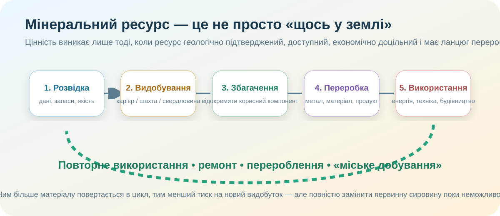

0. Дилема — 3 хв
1. Просторовий доказ: де ресурси — 7 хв

ДержгеонадраEU RMIS — профіль УкраїниOpenStreetMap
2. Чи варто видобувати? — 7 хв
Спробуємо грубу економічну модель. Вона не є бізнес-планом, але показує головний принцип: ресурс стає економічним лише тоді, коли вартість придатного продукту перевищує повні витрати.
3. Дослідження з КТП: чому країна з ресурсами все одно імпортує? — 5 хв
паливно-енергетичних товарів було імпортовано в Україну у 2024 році за даними Держмитслужби.
• недостатній внутрішній видобуток;
• окупація / воєнні ризики;
• вища собівартість;
• відсутність потрібної якості або переробки;
• логістика та сезонний попит.
4. Альтернатива новому видобутку — 4 хв

5. Коротке відео — 3 хв
Дивіться вибірково: типи мінеральних ресурсів, паливні, рудні й нерудні. Завдання — знайти один факт, який підтверджує або спростовує Вашу стартову гіпотезу.
6. Теорія — тільки тепер
Мінеральні ресурси
Корисні копалини та компоненти надр, які можуть бути використані суспільством. За призначенням їх часто поділяють на паливні, рудні та нерудні.
Запаси ≠ ресурси
Ресурси — ширша оцінка потенціалу. Запаси — частина, підтверджена й оцінена за певними геологічними та економічними критеріями.
Собівартість
До неї входять розвідка, видобування, збагачення, енергія, вода, праця, логістика, відновлення земель, екологічні заходи та капітал.
Критична сировина
Матеріали, важливі для економіки й технологій, постачання яких має підвищений ризик. Для них значення має не лише родовище, а й контроль усього ланцюга постачання.
7. CER — доказовий висновок — 4 хв
Питання: «Чи може наявність великих мінеральних ресурсів сама по собі гарантувати економічний розвиток держави?»
8. Домашнє завдання
9. Тест — 10 балів
Спочатку введіть дані. Без цього перевірка не стартує — анонімний геній теж має бути підписаний.